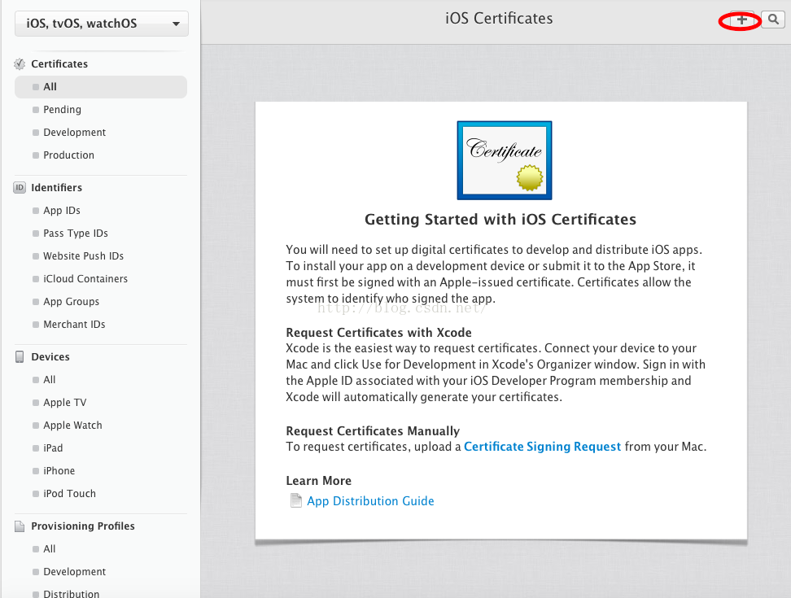
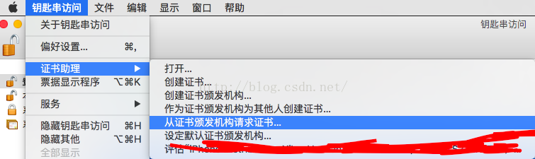
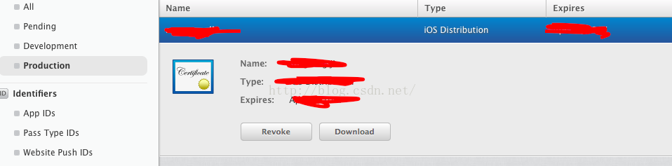
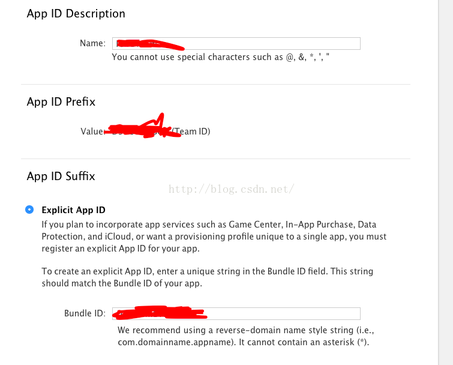
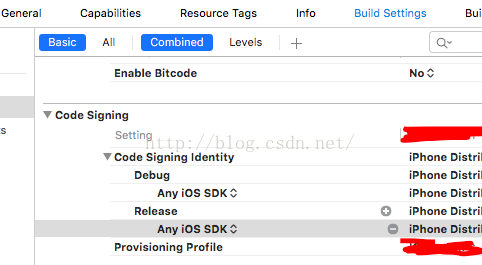

对于iOS开发者来说，apple开发者账号肯定不会陌生。在开发中我们离不开它。下面我简单的为大家介绍一下关于iOS开发中证书的相关内容
一、简述
1、开发者证书（分为开发和发布两种，类型为iOS Development,ios Distribution），
这个是最基础的，不论是真机调试，还是上传到appstore都是需要的，是一个基证书，用来证明自己开发者身份的；
2、appID,这是每一个应用的独立标识，在设置项中可以配置该应用的权限，比如是否用到了PassBook,GameCenter,
以及更常见的push服务，如果选中了push服务，那么就可以创建生成下面第3条所提到的推送证书，所以，在所有和推
送相关的配置中，首先要做的就是先开通支持推送服务的appID;
3、推送证书（分为开发和发布两种，类型分别为APNs Development ios,APNs Distribution ios）,该证书在
appID配置中创建生成，和开发者证书一样，安装到开发电脑上；
4、Provisioning Profiles,这个东西是很有苹果特色的一个东西，我一般称之为PP文件，该文件将appID,开发者
证书，硬件Device绑定到一块儿，在开发者中心配置好后可以添加到Xcode上，也可以直接在Xcode上连接开发者中心
生成，真机调试时需要在PP文件中添加真机的udid；是真机调试和必架必备；
二、证书的制作
如果要制作证书，那么就点击certificates相关

->点击上图中加号
由于从Xcode7之后不用证书都可以真机调试，那么我们这里就以发布版证书为例，
->在Production选择App Store and Ad Hoc
连续continue两次后
需要添加CSR文件。
那么我们需要在mac上制作csr文件，制作方法如下
->打开mac的钥匙串访问

->选择存储到磁盘，保存完成后，再刚才的choose file选择刚才生成的文件
然后continue，done就完成了（不用着急download）
这时候在production就可以看到刚才生成的证书了

->添加app ID
点击aped 再点击右上角的加号
然后在下面的选项选择需要开通的服务
选择done后完成
->创建Xcode需要的profile
选择Distribution,这里是创建发布到App Store的证书

选择第一个continue，就会声场profile文件，完成后download 下来
还有前面的证书也download，
然后双击，就会自动安装；安装完成后在钥匙串就可以看到刚才添加的新证书，
双击profile文件后，就会安装到Xcode，在Xcode build setting->code signing就可以选择profile
